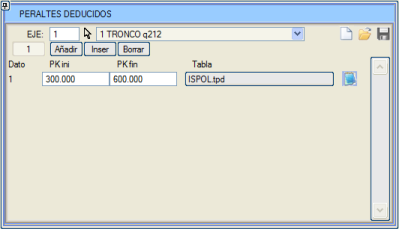
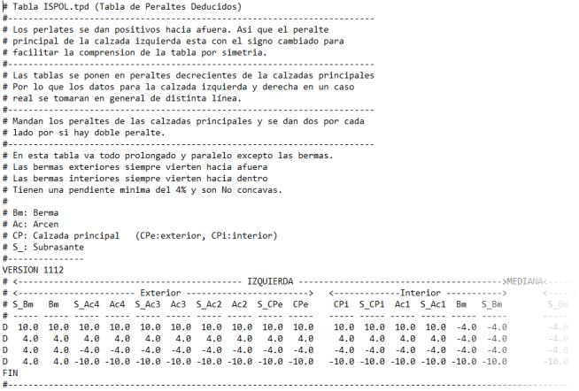

| |
|
TÜRETİLMİŞ DEVERLER
|
Bu iletişim kutusu, eksenin farklı kesimlerinde farklı türetilmiş dever tabloları uygulamayı sağlar. 
Her bir türetilmiş dever tablosunda (.tpd), aşağıdaki elemanların deverlerinin nasıl davranacağı tanımlanır:
Genel olarak, bir .tpd tablosunun uygulandığı kesimlerde, bu değerler klasik tanımın üzerine yazar. İstisnalar, bağımsız, optimal veya sıfırsız alt-paralel terasmandır. Ayrıca, orta refüj palyesi altındaki terasman da [Yakınsak] gibi seçeneklerle değiştirilebilir... Kütüphaneye örnek olarak ISPOL.tpd dosyası eklenmiştir. Bu dosya dört veri satırına sahiptir, ancak satır sayısında bir sınırlama yoktur, sadece ana taşıt yollarının deverlerinin azalan sırada girilmesi gerekir. 
|